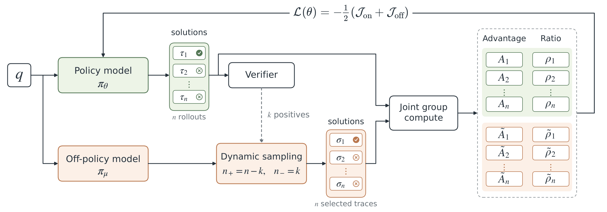
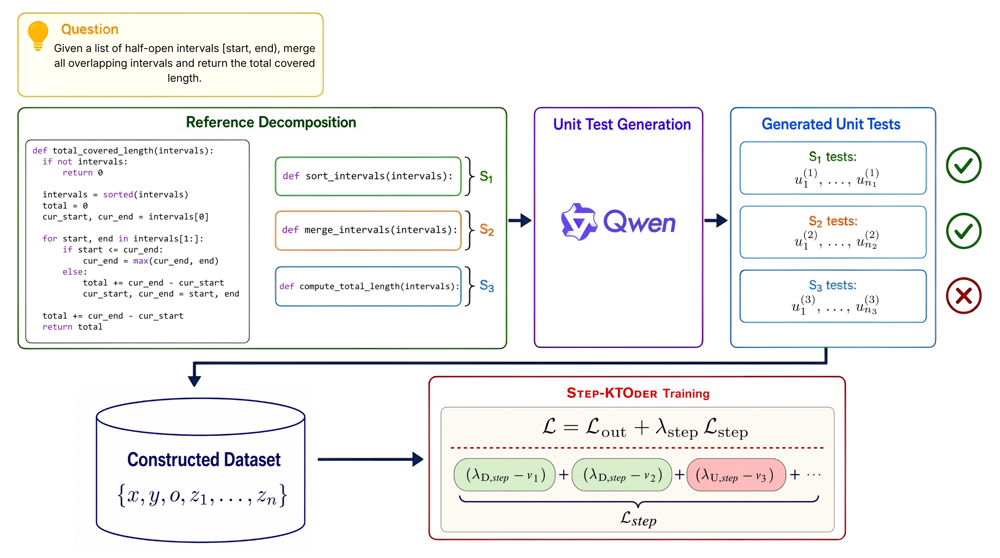
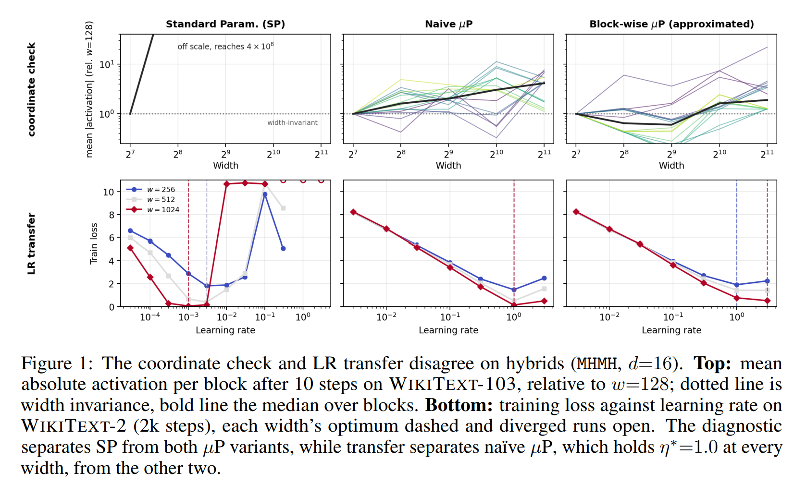

|
Idris Nechnech Hello! I am an MSc student in Electrical and Computer Engineering at Seoul National University, advised by Jungwoo Lee, and an MEng student at Télécom SudParis, Institut Polytechnique de Paris. I am actively looking for a PhD position starting Fall 2027 in LLM alignment and reinforcement learning, with an interest in long-horizon agentic tasks. If you'd like to discuss or collaborate, feel free to reach out! |
Research InterestsMy research focuses on post-training alignment for large language models, spanning reinforcement learning with verifiable rewards (RLVR), mixed-policy learning, and fine-grained, process-level feedback. I am interested in how richer training signals can make learning more sample-efficient and reliable. Going forward, I aim to extend these methods to long-horizon reasoning and agentic tasks. |
Publications |
|
Don’t Filter, Fill: Dynamic Mixed-Policy GRPO for Text-to-SQL
Idris Nechnech, Sehwan Kim, Youssef Ennouri, Sangwoo Hong, Jungwoo Lee Currently under review  To address zero-variance groups in GRPO and provide a richer learning signal, we dynamically fill on-policy groups with both positive and negative off-policy trajectories. A 3B model reaches 56.0% execution accuracy on the BIRD dev set. |
|
Function-Level Execution Feedback for Code Preference Optimization
Idris Nechnech, Sehwan Kim, Jimin Seo, Yeongoon Kim, Minhae Oh, Sangwoo Hong, Jungwoo Lee EMNLP (Findings), 2026 github / arXiv  STEP-KTODER defines steps as module-level functions in decomposed multi-function programs and assigns them binary correctness labels via automatically generated unit tests. Combining these step-level labels with outcome-level feedback yields a stepwise KTO objective. |
|
Learning Rate Transfer for Hybrid Transformer-SSM Architectures
Jimin Seo, Gyubok Lee, Yeonsik Jo, Kiwoong Yoo, Yeongoon Kim, Minhae Oh, Jin Woo Koo, Suhwan Kim, Nakyung Lee, Minsik Seol, Idris Nechnech, Jaehyeon Kim, Giho Lee, Jungwoo Lee NeurIPS, 2026 arXiv  We show that the original μP prescription with AdamW gives near-zero learning-rate transfer gap for hybrid Transformer–SSM models across widths 256–2048 and depths 4–32, up to billion-parameter scale, even though SSM blocks fall outside μP's theory and fail the standard coordinate check. We explain this through a two-condition decomposition: global update-to-weight invariance from μP, and local per-component balance from AdamW. The transfer also holds for Nemotron-H, a production hybrid model. |
| Template based on Jon Barron's website. |